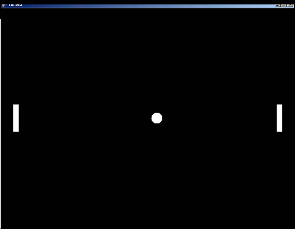
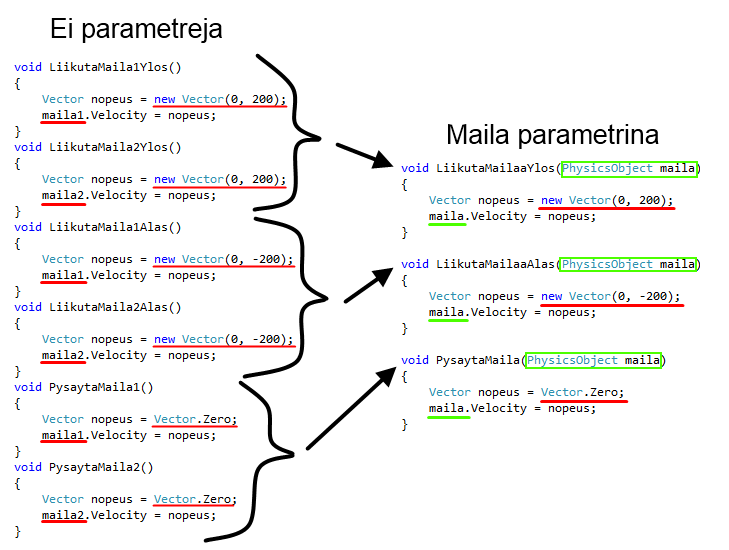
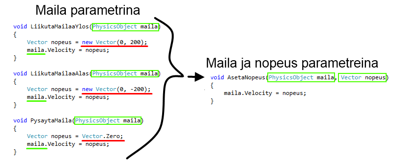

Pong, vaihe 5: Mailojen liikuttaminen¶
Tämä on Pong-pelin tutoriaalin osa 5/7. Tämän vaiheen aikana
- Lisätään peliin näppäimet
- Laitetaan mailat liikkumaan pelaajien ohjaamina
Näin ohjelmaamme voi jo kutsua peliksi :).

1. Taustatietoa näppäimistönkuuntelusta¶
Jos ymmärrät jo, kuinka näppäimistönkuuntelu toimii, voit hypätä kohtaan 2.
Pelissämme on ollut alusta saakka nappi, josta pelin saa lopetettua. Lopetusnappi on asetettu Begin-aliohjelmassa.
Pelin lopettamisen nappi on siis tehty siten, että näppäimistöltä kuunnellaan Esc-nappia, ja kun sitä painetaan, kutsutaan aliohjelmaa ConfirmExit:
(Tätä ei tarvitse kirjoittaa uudestaan.)
public override void Begin()
{
LuoKentta();
AloitaPeli();
Keyboard.Listen(Key.Escape, ButtonState.Pressed, ConfirmExit, "Lopeta peli");
}
Muita näppäimiä saa asetettua vastaavalla tavalla. Omien näppäinten asettamista varten tutkitaan hieman tarkemmin, miten lopetusnappi on tehty.
Aliohjelmaa Keyboard.Listen kutsumalla saadaan peli kuuntelemaan näppäimistön painalluksia. Listen-aliohjelmalle annetaan seuraavat parametrit:
Ensimmäinen parametri kertoo, mitä näppäintä kuunnellaan. Lopetusnapissa se on Key.Escape eli Esc-näppäin.
Toinen parametri määrittää, minkälaisia näppäinten tapahtumia halutaan kuunnella, ja sillä on neljä mahdollista arvoa:
ButtonState.Released: Näppäin on juuri vapautettuButtonState.Pressed: Näppäin on juuri painettu alasButtonState.Up: Näppäin on ylhäällä (vapautettuna)ButtonState.Down: Näppäin on alaspainettuna
Kolmas parametri on sen aliohjelman nimi, jota kutsutaan, kun näppäin on siinä tilassa, jota kuunnellaan. ConfirmExit on valmis aliohjelma, jota kutsumalla peli kysyy, halutaanko se lopettaa. Kolmas parametri voi olla myös itse kirjoitettu aliohjelma.
Neljäs parametri on ohjeteksti, joka voidaan näyttää pelaajalle pelin alussa. Tässä tarvitsee vain kertoa, mitä tapahtuu, kun näppäintä painetaan. Ohjetekstin tyyppi on string eli merkkijono eli tekstiä. Teksti kirjoitetaan lainausmerkeissä ". Tämän parametrin arvo voi olla myös null eli tyhjä.
Lopuksi Listen-aliohjelmalle voi antaa lisääkin parametreja sen mukaan, mitä pelissä tarvitaan. Nämä ylimääräiset parametrit välitetään näppäintä kuuntelevalle aliohjelmalle.
2. Ohjainten asettaminen¶
Koska näppäinten asettaminen on uusi selkeä kokonaisuus, tehdään siitä oma aliohjelma.
Lisää ohjelmakoodiin uusi aliohjelma nimeltä AsetaOhjaimet ja siirrä lopetusnapin tekevä rivi sinne:
void AsetaOhjaimet()
{
Keyboard.Listen(Key.Escape, ButtonState.Pressed, ConfirmExit, "Lopeta peli");
}
Lisää AsetaOhjaimet-aliohjelman kutsu Beginiin.
Ohjaimet on loogista asettaa ennen kuin peli aloitetaan, joten kirjoita AsetaOhjaimet-aliohjelman kutsu LuoKentta- ja AloitaPeli-aliohjelmien kutsujen väliin.
Begin näyttää muutosten jälkeen tältä:
Pong-pelissä mailan ohjaamisen ideana on, että maila liikkuu ylös, kun jokin näppäin on pohjassa. Kun näppäin päästetään pohjasta, maila pysähtyy.
Vaikka emme vielä tarkalleen tiedä, miten saamme mailat liikkumaan, tehdään näppäimen kuuntelut toisen mailan liikuttamiseksi ylöspäin. Toivomme, että toinen maila liikkuisi ylöspäin näppäimellä A.
Kirjoita kaksi Listen-aliohjelman kutsua lisää AsetaOhjaimet-aliohjelmaan mailan liikuttamista varten:
void AsetaOhjaimet()
{
Keyboard.Listen(Key.A, ButtonState.Down, LiikutaMaila1Ylos, "Pelaaja 1: Liikuta mailaa ylös");
Keyboard.Listen(Key.A, ButtonState.Released, PysaytaMaila1, null);
Keyboard.Listen(Key.Escape, ButtonState.Pressed, ConfirmExit, "Lopeta peli");
}
Kuunnellaan näppäintä Key.A eli A-näppäintä.
Ensimmäisessä kutsussa kerrotaan aliohjelma (LiikutaMaila1Ylos), johon tullaan, kun näppäin on pohjassa (ButtonState.Down).
Toisessa kutsussa kerrotaan, mitä tehdään (PysaytaMaila1), kun näppäin vapautetaan (ButtonState.Released).
Emme ole vielä toteuttaneet tällaisia aliohjelmia, mutta mietitään sitä vasta seuraavaksi.
[!EI TOIMI VIELÄ]
3. Aliohjelma mailan liikuttamiseksi¶
Koska maila on fysiikkaolio, sen yhtenä ominaisuutena on nopeus (engl. velocity). Jos vain asetamme mailalle jonkin nopeuden, fysiikkapeli hoitaa mailan paikan muuttamisen.
Nopeus esitetään vektorina. Vektorin x-arvo kertoo mailan nopeuden vaakasuunnassa ja y-arvo pystysuunnassa. Millaisia vektoreita siis tarvitsemme mailan liikuttamiseen ylös ja alas? Entä miten voisimme ilmaista mailan pysäyttämisen?
[!EI TOIMI VIELÄ]
Tarvitsemme kolme eri nopeusvektoria:
- Ylöspäin: nopeuden x-arvo nolla ja y-arvo positiivinen
- Alaspäin: nopeuden x-arvo nolla ja y-arvo negatiivinen
- Pysähtyminen: nopeuden x- ja y-arvot molemmat nolla eli nollavektori
Koska lisäksi mailoja on kaksi, voisimme toteuttaa mailojen liikuttamisen kuudella eri aliohjelmalla: LiikutaMaila1Ylos, LiikutaMaila2Ylos, LiikutaMaila1Alas, LiikutaMaila2Alas, PysaytaMaila1 ja PysaytaMaila2.
Tarkemmin ajateltuna kaikki aliohjelmat tekevät kuitenkin samaa asiaa: asettavat mailalle nopeuden. Erilaista on vain maila, jolle nopeus asetetaan, ja nopeuden suunta.
Viemällä liikutettavan mailan parametrina selviämme mailojen liikuttamisesta vain kolmella aliohjelmalla: LiikutaMailaaYlos, LiikutaMailaaAlas ja PysaytaMaila.
Älä kirjoita alla olevia aliohjelmia itse.

Kun jälleen tarkastellaan kolmea aliohjelmaamme, huomataan, että jokaisessa edelleen toistuu vektorin luominen ja sen asettaminen mailalle nopeudeksi. Erilaista on vain se, millainen vektori nopeudeksi asetetaan.
Jos myös nopeus vietäisiin parametrina, selviäisimme mailojen liikuttamisesta yhdellä ainoalla aliohjelmalla!

Mailojen liikuttamisen voimme siis hoitaa kuuden aliohjelman sijaan yhdellä aliohjelmalla AsetaNopeus, jolle annetaan parametrina maila, jota liikutetaan, ja mailan nopeuden vektori.
Kirjoita siis aliohjelma AsetaNopeus ja sille alla oleva koodi:
[!EI TOIMI VIELÄ]
3.1. Mailat ja vektorit attribuuteiksi¶
Listen-aliohjelmalle voi antaa mitä tahansa omia parametreja pakollisten parametrien jälkeen. Nämä parametrit toimitetaan näppäintä kuuntelevalle aliohjelmalle.
Tehdään mailoille ja vektoreille muuttujat, jotka voimme antaa parametreina mailan liikuttamisesta vastaavalle aliohjelmalle.
Jotta muuttujat näkyisivät AsetaOhjaimet-aliohjelmalle, tehdään niistäkin attribuutteja.
Esittele luokan alussa uudet attribuutit, maila1 ja maila2, sekä luo uudet vektorit nopeusYlos ja nopeusAlas:
public class Pong : PhysicsGame
{
Vector nopeusYlos = new Vector(0, 200);
Vector nopeusAlas = new Vector(0, -200);
PhysicsObject pallo;
PhysicsObject maila1;
PhysicsObject maila2;
public override void Begin()
{
LuoKentta();
AsetaOhjaimet();
AloitaPeli();
}
[!EI TOIMI VIELÄ]
3.2. Mailojen sijoitus attribuutteihin¶
Jotta luomamme mailat menevät attribuutteihin maila1 ja maila2, täytyy ne sijoittaa niihin.
Muokkaa tätä varten LuoMaila-aliohjelmaa niin, että se palauttaa siellä luodun mailan:
PhysicsObject LuoMaila(double x, double y)
{
PhysicsObject maila = PhysicsObject.CreateStaticObject(20.0, 100.0);
maila.Shape = Shape.Rectangle;
maila.X = x;
maila.Y = y;
maila.Restitution = 1.0;
Add(maila);
return maila;
}
Ennen muutosta aliohjelman nimen edessä oli sana void sen merkiksi, että aliohjelma ei palauta minkään tyyppistä tietoa. Koska nyt aliohjelma palauttaa mailan, joka on tyyppiä PhysicsObject, vaihdettiin se void:in tilalle. Aliohjelman loppuun lisättiin return-lause, joka palauttaa luodun mailan.
Muokkaa LuoKentta-aliohjelmaa niin, että luodut mailat sijoitetaan muuttujiin maila1 ja maila2:
void LuoKentta()
{
pallo = new PhysicsObject(40.0, 40.0);
pallo.Shape = Shape.Circle;
pallo.X = -200.0;
pallo.Y = 0.0;
pallo.Restitution = 1.0;
Add(pallo);
maila1 = LuoMaila(Level.Left + 20.0, 0.0);
maila2 = LuoMaila(Level.Right - 20.0, 0.0);
Level.CreateBorders(1.0, false);
Level.Background.Color = Color.Black;
Camera.ZoomToLevel();
}
LuoMaila-aliohjelman tekemät mailat saadaan otettua talteen muuttujiin sen takia, että LuoMaila palauttaa tehdyn mailan. Ilman palauttamista maila kyllä tehtäisiin, mutta emme luomisen jälkeen pystyisi enää viittaamaan siihen millään tavalla.
Nyt meillä on olemassa mailat maila1 ja maila2, jotka näkyvät kaikille aliohjelmille.
[!EI TOIMI VIELÄ]
3.3. Maila liikkumaan ylöspäin¶
Muuta lopuksi AsetaOhjaimet-aliohjelman Listen-kutsuja niin, että suoritetaan AsetaNopeus-aliohjelmaa ja viedään sille parametrina se maila, johon halutaan vaikuttaa, ja se vektori, joka halutaan mailalle asettaa nopeudeksi:
void AsetaOhjaimet()
{
Keyboard.Listen(Key.A, ButtonState.Down, AsetaNopeus, "Pelaaja 1: Liikuta mailaa ylös", maila1, nopeusYlos);
Keyboard.Listen(Key.A, ButtonState.Released, AsetaNopeus, null, maila1, Vector.Zero);
Keyboard.Listen(Key.Escape, ButtonState.Pressed, ConfirmExit, "Lopeta peli");
}
[!KOKEILE] Ellei pelisi toimi, yritä selvittää, mistä vika johtuu, tai pyydä ohjaajaa auttamaan.
4. Molempien mailojen liikuttaminen¶
Molempien mailojen liikuttaminen voidaan nyt tehdä helposti vain lisäämällä Keyboard.Listen-kutsuja.
Täydennä AsetaOhjaimet-aliohjelmaasi vielä seuraavat vihreällä merkityt Listen-kutsut:
void AsetaOhjaimet()
{
Keyboard.Listen(Key.A, ButtonState.Down, AsetaNopeus, "Pelaaja 1: Liikuta mailaa ylös", maila1, nopeusYlos);
Keyboard.Listen(Key.A, ButtonState.Released, AsetaNopeus, null, maila1, Vector.Zero);
Keyboard.Listen(Key.Z, ButtonState.Down, AsetaNopeus, "Pelaaja 1: Liikuta mailaa alas", maila1, nopeusAlas);
Keyboard.Listen(Key.Z, ButtonState.Released, AsetaNopeus, null, maila1, Vector.Zero);
Keyboard.Listen(Key.Up, ButtonState.Down, AsetaNopeus, "Pelaaja 2: Liikuta mailaa ylös", maila2, nopeusYlos);
Keyboard.Listen(Key.Up, ButtonState.Released, AsetaNopeus, null, maila2, Vector.Zero);
Keyboard.Listen(Key.Down, ButtonState.Down, AsetaNopeus, "Pelaaja 2: Liikuta mailaa alas", maila2, nopeusAlas);
Keyboard.Listen(Key.Down, ButtonState.Released, AsetaNopeus, null, maila2, Vector.Zero);
Keyboard.Listen(Key.F1, ButtonState.Pressed, ShowControlHelp, "Näytä ohjeet");
Keyboard.Listen(Key.Escape, ButtonState.Pressed, ConfirmExit, "Lopeta peli");
}
Kuten nyt nähdään, mailan ja nopeuden vieminen parametrina Keyboard.Listen-aliohjelmalle oli todella hyödyllistä, sillä voimme nyt helposti lisätä ohjauksen useammalle kuin yhdelle mailalle emmekä tarvitse ohjaamiseen kuin yhden aliohjelman.
Kokeile, miten pelisi toimii!
[!KOKEILE]
5. Lopputulos¶
Kun mailojen ohjaaminen on mukana, näyttää koodi seuraavalta:
using System;
using System.Collections.Generic;
using System.Linq;
using System.Text;
using Jypeli;
using Jypeli.Assets;
using Jypeli.Controls;
using Jypeli.Effects;
using Jypeli.Widgets;
public class Pong : PhysicsGame
{
Vector nopeusYlos = new Vector(0, 200);
Vector nopeusAlas = new Vector(0, -200);
PhysicsObject pallo;
PhysicsObject maila1;
PhysicsObject maila2;
public override void Begin()
{
LuoKentta();
AsetaOhjaimet();
AloitaPeli();
}
void LuoKentta()
{
pallo = new PhysicsObject(40.0, 40.0);
pallo.Shape = Shape.Circle;
pallo.X = -200.0;
pallo.Y = 0.0;
pallo.Restitution = 1.0;
Add(pallo);
maila1 = LuoMaila(Level.Left + 20.0, 0.0);
maila2 = LuoMaila(Level.Right - 20.0, 0.0);
Level.CreateBorders(1.0, false);
Level.Background.Color = Color.Black;
Camera.ZoomToLevel();
}
PhysicsObject LuoMaila(double x, double y)
{
PhysicsObject maila = PhysicsObject.CreateStaticObject(20.0, 100.0);
maila.Shape = Shape.Rectangle;
maila.X = x;
maila.Y = y;
maila.Restitution = 1.0;
Add(maila);
return maila;
}
void AloitaPeli()
{
Vector impulssi = new Vector(500.0, 0.0);
pallo.Hit(impulssi * pallo.Mass);
}
void AsetaOhjaimet()
{
Keyboard.Listen(Key.A, ButtonState.Down, AsetaNopeus, "Pelaaja 1: Liikuta mailaa ylös", maila1, nopeusYlos);
Keyboard.Listen(Key.A, ButtonState.Released, AsetaNopeus, null, maila1, Vector.Zero);
Keyboard.Listen(Key.Z, ButtonState.Down, AsetaNopeus, "Pelaaja 1: Liikuta mailaa alas", maila1, nopeusAlas);
Keyboard.Listen(Key.Z, ButtonState.Released, AsetaNopeus, null, maila1, Vector.Zero);
Keyboard.Listen(Key.Up, ButtonState.Down, AsetaNopeus, "Pelaaja 2: Liikuta mailaa ylös", maila2, nopeusYlos);
Keyboard.Listen(Key.Up, ButtonState.Released, AsetaNopeus, null, maila2, Vector.Zero);
Keyboard.Listen(Key.Down, ButtonState.Down, AsetaNopeus, "Pelaaja 2: Liikuta mailaa alas", maila2, nopeusAlas);
Keyboard.Listen(Key.Down, ButtonState.Released, AsetaNopeus, null, maila2, Vector.Zero);
Keyboard.Listen(Key.F1, ButtonState.Pressed, ShowControlHelp, "Näytä ohjeet");
Keyboard.Listen(Key.Escape, ButtonState.Pressed, ConfirmExit, "Lopeta peli");
}
void AsetaNopeus(PhysicsObject maila, Vector nopeus)
{
maila.Velocity = nopeus;
}
}